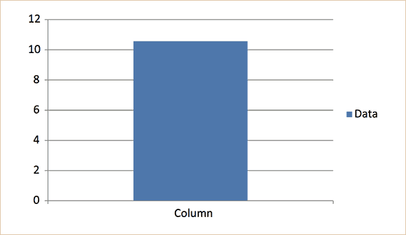

The Five Design Sheet (FdS) methodology provides designers a way to create information visualization interfaces through lo-fidelity methods using a 5-Step plan.
The FdS methodology is:
The FdS encourages client input throughout the process, while structuring and funneling the creative ideation process into a useful design. The FdS method was tested in the field with clients over three years in comparison to a more conventional design approach. Results showed that the FdS method resulted in fewer design iterations and was completed in less time than the conventional design approach. FdS was also evaluated using the System Usability Scale and received a “good” level of usability.
Source: Jonathan C. Roberts, Chris Headleand, and Panagiotis D. Ritsos, “Sketching Designs Using the Five Design-Sheet Methodology,” Visualization and Computer Graphics, IEEE Transactions on , vol.PP, no.99, pp.1,1
